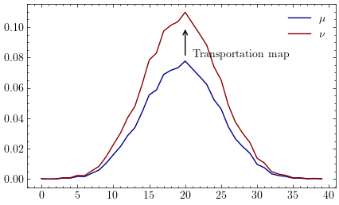
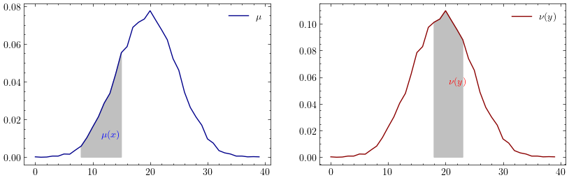
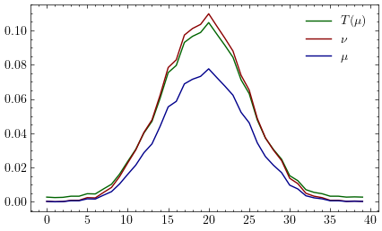

Dans ce blog, nous illustrons comment le transport optimal entre deux mesures discrètes peut être réduit à un problème d’apprentissage statistique qu’on peut résoudre à l’aide d’un algorithme d’optimization ici la descente de gradient.
Transport optimal
Soit
$(\Omega_X, F_X, \mu)$et$(\Omega_X, F_Y, \nu)$deux espaces de probabilité$X:\Omega_X \rightarrow \mathbb{R}$et$Y:\Omega_Y \rightarrow \mathbb{R}$deux variables aléatoires
La formulation de Kantorovich du problème de transport optimal est :
$$ E_1 : \dfrac{\inf}{\gamma \in \Gamma(\mu, \nu)}{ \int_{X \times Y} c_T(x,y)d\gamma(x,y)} $$
Apprentissage statistique
Soit
$(x_1, y_1), ..., (x_n, y_n) \sim X \times Y$des échantillons issues de deux variables aléatoires$f:X \rightarrow Y$une fonction qu’on aimerait apprendre
si $f_h$ est un candidat, le coût associé est $c_T(x,y) = d(f_h(x),y)$
et le risque
$$ R_T = \int_{X \times Y} c_T(x,y)d\gamma(x,y) : \gamma \in \Gamma(x,y) $$
La distribution $\gamma(x,y)$ étant inconnue, on se contente donc de minimizer le risque empirique obtenu à l’aide de l’échantillon. Le risque empirique est donné par
$$ R_{emp}^{T} = \frac{1}{N} \sum_{i=1}^{N}c_T(x_i, y_i) $$
Simulation numérique
Soient $\mu \sim N(0,1)$ et $\nu \sim N(0, \sqrt(2))$.
Nous recherchons un plan de transport $T: X \rightarrow Y$ qui mininmize $E_1$

Le plan de transport optimal $T$ satisfait $T_{\ast}(\mu) = \nu$ et est appelé mesure image de $\mu$ par $T$.
$\mu$ et $\nu$ étant des mesures discretes sur $\Gamma(\mu, \nu)$, $T$ doit vérifier $T(\mu(x)) = \nu(y) \forall x,y \in X \times Y$

Choisissons le plan de transport suivant
$$T(x) = a * x + b : a,b \in \mathbb{R}$$
La fonction de coût est la distance entre les deux mesures soit
$$c_T(x, y) = (y_i - T(x_i))^2 = (y_i - a * x_i - b)^2$$
Le risque empirique correspondant est
$$R_{emp}^{T} = \frac{1}{2N} \sum_{i=1}^{N} (y_i - T(x_i))^2 = \frac{1}{2N} \sum_{i=1}^{N} (y_i - a * x_i - b)^2$$
Cette fonction est convexe et différentiable en $a$ et $b$, elle admet un minimum qui peut être atteint en suivant la direction du gradient.
Le gradient du risque empirique est
$$ \begin{align} \nabla R_{emp}^{T} &= ( \dfrac{\partial R_{emp}^{T}}{\partial a} , \dfrac{\partial R_{emp}^{T}}{\partial b} ) \\ &= ( \frac{2}{N} \sum_{i=1}^{N}x_i(a*x_i + b - y_i), \frac{2}{N} \sum_{i=1}^{N} (a * x_i + b - y_i)) \end{align} $$
L’algorithme de descende de gradient peut être utilisé pour atteindre ce minimum:
- Choix de
$a_0$et$b_0$ - Calcul du gradient
$\nabla R_{emp}^{T}$ - Mettre à jour les paramètres
$(a_{k+1} b_{k+1}) = (a_k b_k) - \lambda \nabla R_{emp}^{T}$ - s’arrêter si l’algorithme converge
On peut vérifier graphiquement le résultat obtenu à l’aide de cette méthode:

L’image de la mesure $\mu$ par $T$ s’approche de $\nu$.
Un notebook est disponible à l’adresse suivant pour réproduire les résultats de cette expérience : Statistical learning.ipynb.